Auditor
El auditor es la funcionalidad complementaria de los plug-ins de WebLogic 11g y 12c. Dicha funcionalidad es para detectar modificaciones en los ambientes administrados por Vesta , de manera que cuando haya una modificación en alguna configuración de WebLogic ésta sea detectada por Vesta e informe al usuario de dicha actividad en los ambientes.
Instalación
Para la instalación se requiere:
- El jar de instalación llamado CustomAuditor.jar proporcionado por Vesta
- Acceso a la consola de WebLogic
- Acceso al sistema operativo donde está instalado WebLogic
Auditoria de cambios
Para instalar el auditor, tienes que iniciar sesión en la consola de WebLogic donde será instalado. En esta pantalla se deberá seleccionar mediante la opción “Configuration Audit Mode” el modo de auditoria “Audit Changes”
Click domain name > Configuration > General > Advance
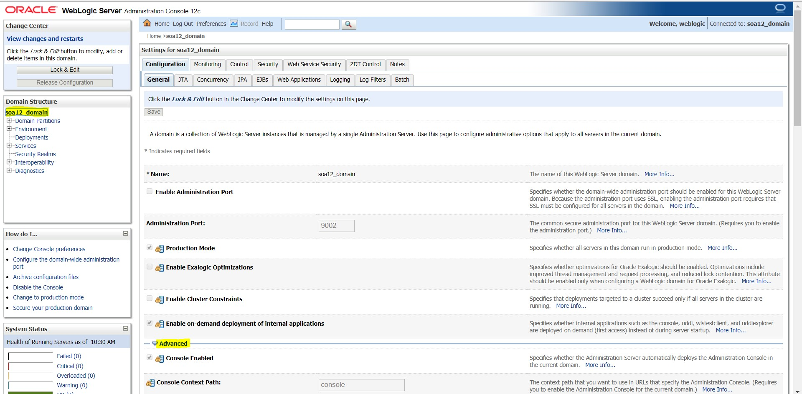
Nota: El servidor de dominio “Admin Server” será apagado y encendido según se indique en este documento.
La opción “Change Audit” deberá ser seleccionada.
Posteriormente se selecciona la opción “Save” y de ser necesario “Activate changes”
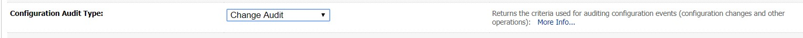
Nota: Para modificar el valor es necesario obtener el lock de la consola en la opción “Lock & Edit” ubicada en la parte superior izquierda en la sección Change Center, solo aplica a dominios instalados en modo Production.
Apagar AdminServer
Luego de establecer el valor se procede a apagar el AdminServer
Una vez apagado el Admin Server el archivo “CustomAuditor.jar” deberá ser copiado a la ubicación de domino “MBeans” ubicado en la siguiente ruta:
Nota: Durante el proceso de copiado de “Custom Auditor” el servidor de dominio “Admin Server” deberá estar apagado
Por ejemplo: D:\Middleware_SOA\Oracle_Home\wlserver\server\lib\mbeantypes
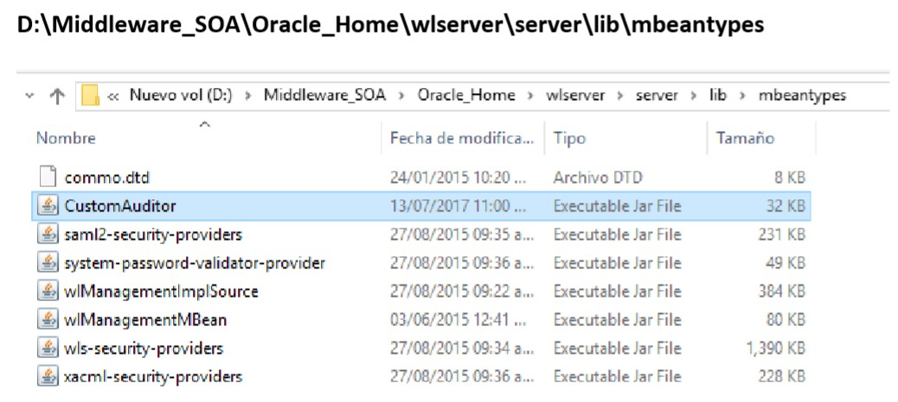
Se procede a levantar el servidor Admin Server
Nota: Una vez finalizado el proceso de copiado de “Custom Auditor” el servidor de domino “Admin Server” deberá ser encendido
Publicación
En la siguiente pantalla se deberá crear un nuevo proveedor de auditoria previendo la siguiente información
Nota: Si durante el proceso de publicación un mensaje de “validación de esquemas” es mostrado los servidores de dominio “Admin Server y Managed Servers” deberán ser reiniciados
Domain name > click Security Realms > Click myrealm
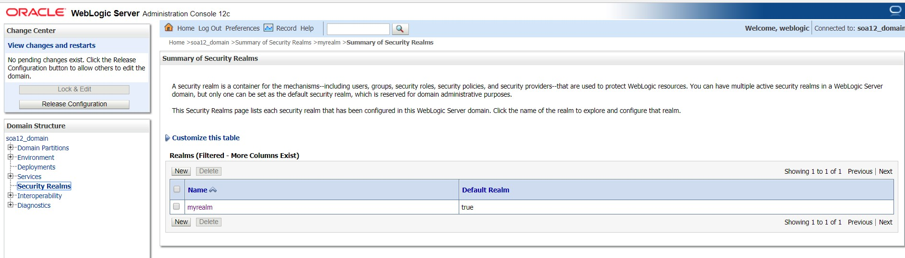
Providers > Auditing > Click New
Nota: Para modificar el valor es necesario obtener el lock de la consola en la opción “Lock & Edit” ubicada en la parte superior izquierda en la sección Change Center, solo aplica a dominios instalados en modo Production.
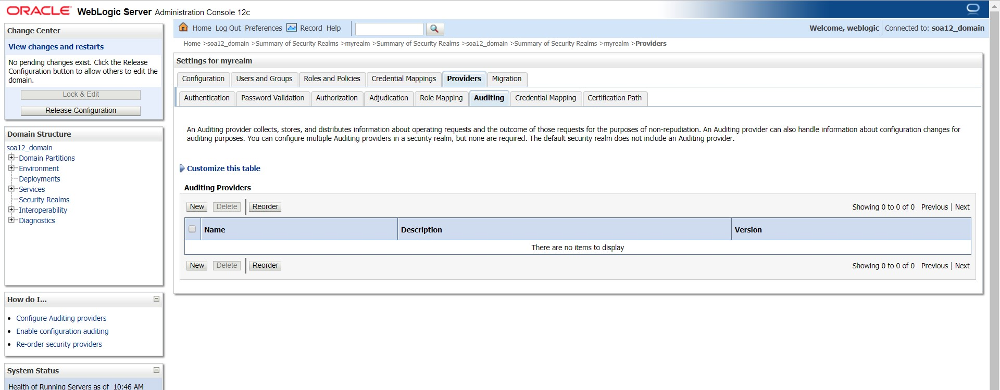
-
Name : Nombre del Proveedor de Auditoria , por ej.: CustomAuditor
-
Type : Tipo de Auditor de cambios , ej. CustomAuditor
-
Click OK
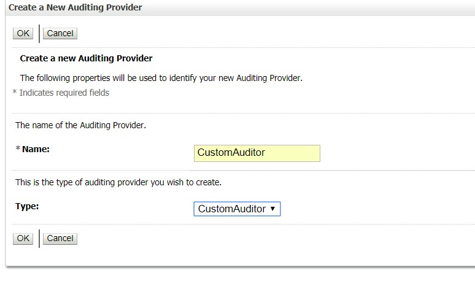
Click Auditor name
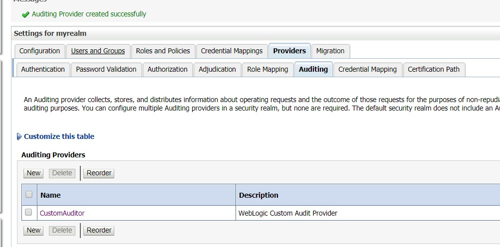
Configuration > Click Provider Specific
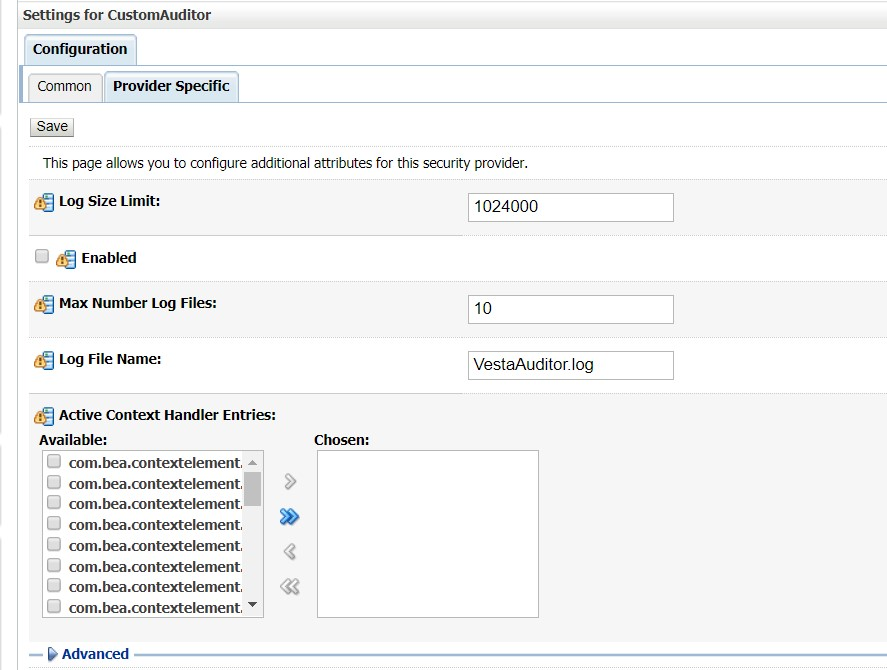
Enabled : true
Active Context Handler Entries : ALL
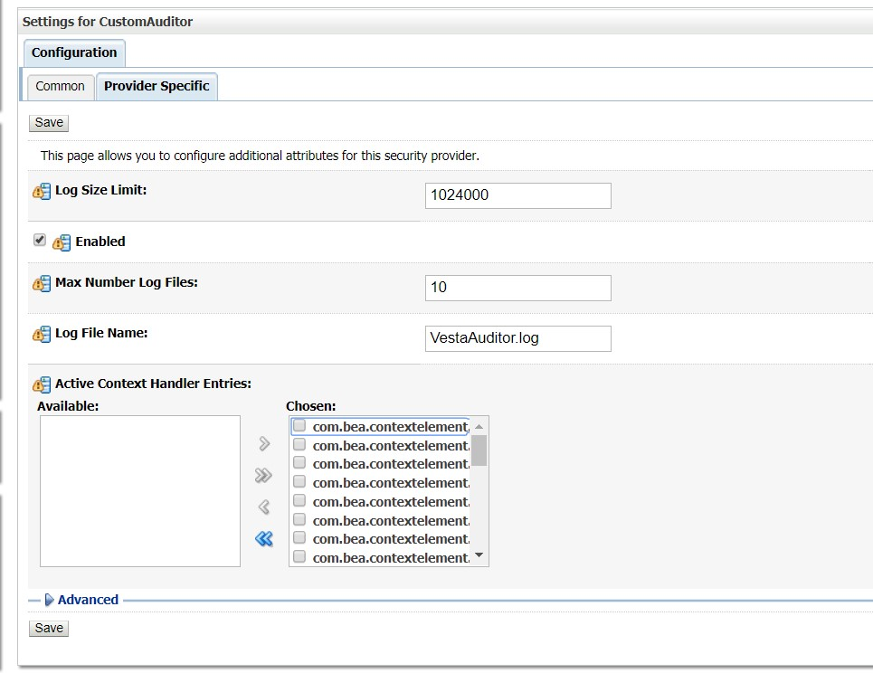
Posteriormente se selecciona la opción “Save” y de ser necesario “Activate changes”
Nota: Una vez finalizado el proceso de publicación el servidor de dominio “Admin Server” y los servidores de dominio “Managed Servers” deberán ser apagados
Configuración Admin Server
Para que WebLogic informe a Vesta los cambios que ocurren en el ambiente es necesario modificar los parámetros de inicio del servidor de dominio “Admin Server” esto es editando el script “startWebLogic.sh” o “startWebLogic.cmd” ya sea Linux o Windows el sistema operativo donde corre WebLogic.
-Dvesta.server= IP de servidor de dominio principal en VESTA
-Dvesta.port= Puerto de servidor de dominio principal en VESTA default (7890)
-Dvesta.id= Identificador de configuración dentro de VESTA
Nota: El identificador de configuración usado en -Dvesta.id se obtiene en Vesta cuando se elige la opción “Plug-ins > Configure” , una vez configurado un WebLogic con una aplicación y ambiente y se guarda, entonces se genera un Id de configuración mostrado en un popup si la configuración fue exitosa, ese id es el que se asigna en este parámetro.
D:\Middleware_SOA\Oracle_Home\user_projects\domains\base_domain\startWebLogic.cmd
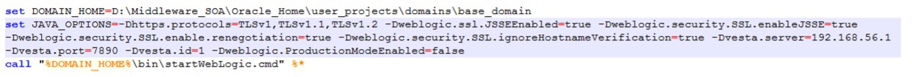
Nota: Una vez finalizado el proceso de configuración el servidor de dominio “Admin Server” deberá ser reiniciado para que los cambios al script hagan efecto.
Configuracion managed server
En este paso los parámetros de inicio de los servidores de dominio “Managed Servers” deberán ser modificados
Click domain name > Servers > Server name > Configuration> Server start > Arguments
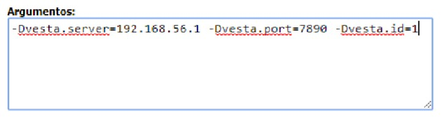
Nota: Una vez finalizado el proceso de configuración los servidores de dominio “Managed Servers” deberán ser reiniciados.